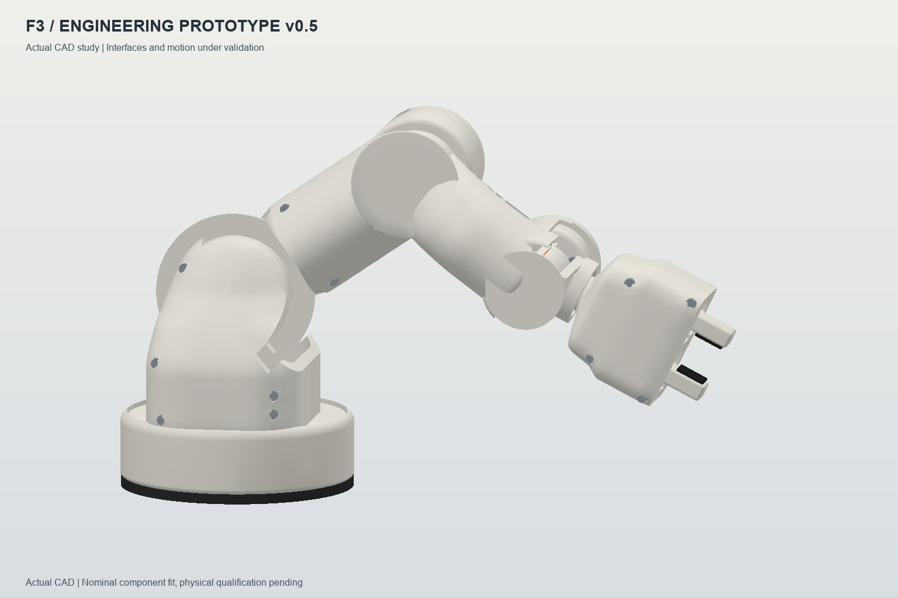

07 / Robotics · Mechanical design
A robotic arm, refined through iterations.
A family of robotic-arm projects connecting mechanical design, programmable motion, and embedded control across several iterations.

The project family
The collection brings together the original arm, Robotic-Arm-V1, the 2.0 control experiments, and Arduino and ESP32 implementations. These are successive studies of mechanics, sensing, interfaces, and motion control.
Current mechanical study
The F3 study uses a nominal 300 mm reach, an independent pitch-and-roll wrist, and opposed rack jaws. Parametric CAD describes actuator envelopes, hollow housings, bearing seats, and split covers.
- Component-envelope and sampled-motion checks.
- Static torque and gripper-mesh screening.
- STEP exports, CAD renders, and dimensional fit-gauge models.
Development scope
The software archive includes servo tests, camera and sensor experiments, manual controls, and planning prototypes. The current CAD study is under validation: actuator interfaces, physical fit, and payload performance are not yet qualified as a fabrication release.